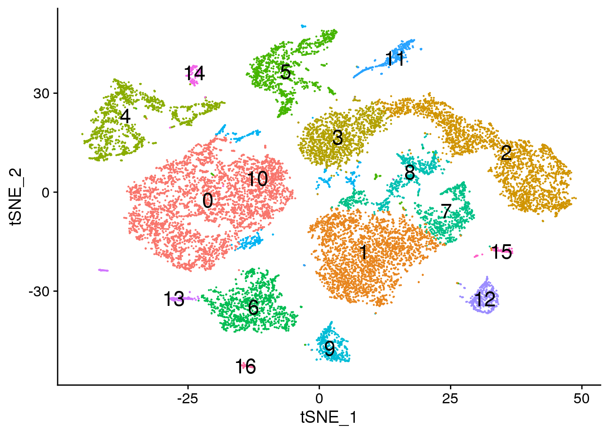
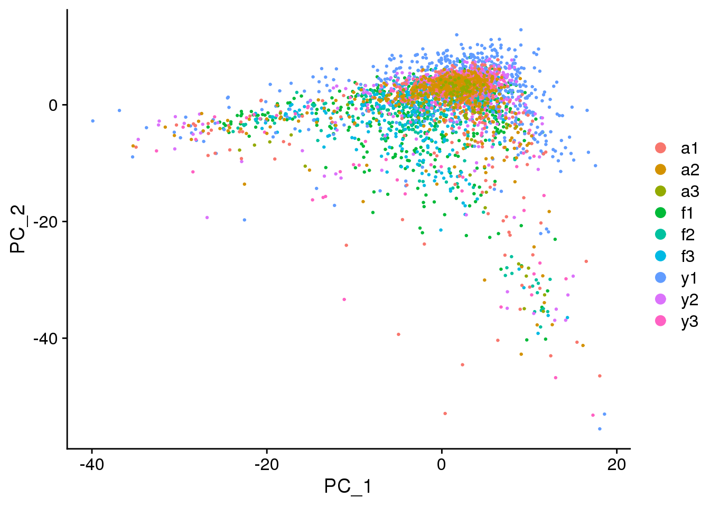
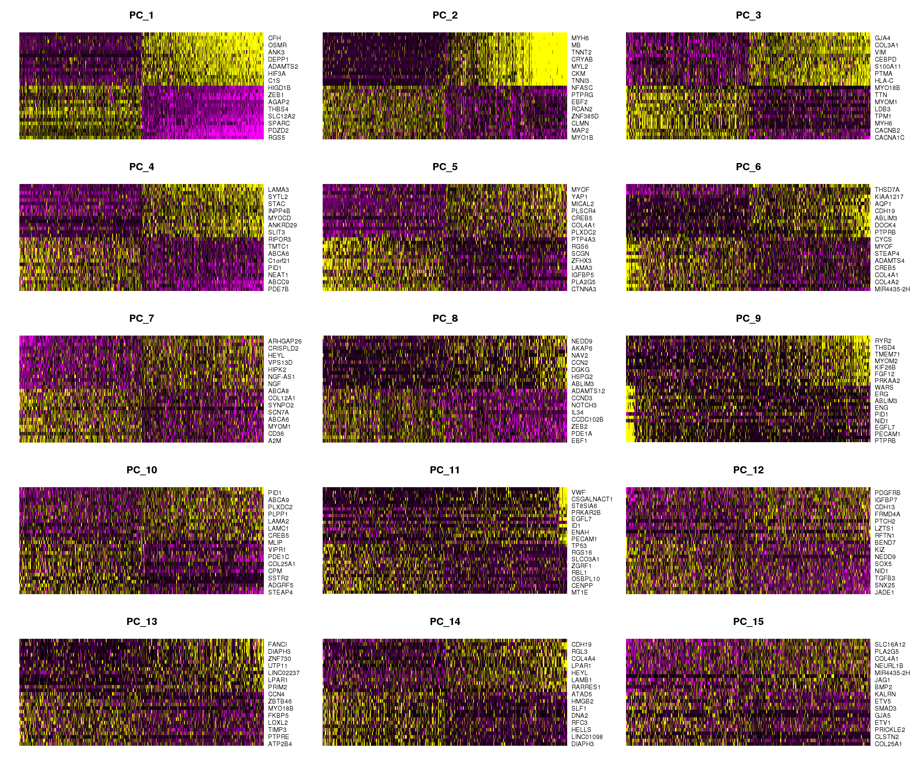
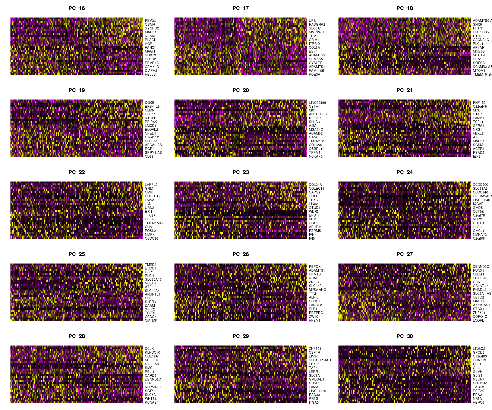

Recluster epicardial lineage
Belinda Phipson
8/15/2019
Last updated: 2019-10-28
Checks: 6 0
Knit directory: Porello-heart-snRNAseq/
This reproducible R Markdown analysis was created with workflowr (version 1.3.0). The Checks tab describes the reproducibility checks that were applied when the results were created. The Past versions tab lists the development history.
Great! Since the R Markdown file has been committed to the Git repository, you know the exact version of the code that produced these results.
Great job! The global environment was empty. Objects defined in the global environment can affect the analysis in your R Markdown file in unknown ways. For reproduciblity it’s best to always run the code in an empty environment.
The command set.seed(20190603) was run prior to running the code in the R Markdown file. Setting a seed ensures that any results that rely on randomness, e.g. subsampling or permutations, are reproducible.
Great job! Recording the operating system, R version, and package versions is critical for reproducibility.
Nice! There were no cached chunks for this analysis, so you can be confident that you successfully produced the results during this run.
Great! You are using Git for version control. Tracking code development and connecting the code version to the results is critical for reproducibility. The version displayed above was the version of the Git repository at the time these results were generated.
Note that you need to be careful to ensure that all relevant files for the analysis have been committed to Git prior to generating the results (you can use wflow_publish or wflow_git_commit). workflowr only checks the R Markdown file, but you know if there are other scripts or data files that it depends on. Below is the status of the Git repository when the results were generated:
Ignored files:
Ignored: .Rhistory
Ignored: .Rproj.user/
Untracked files:
Untracked: analysis/07b-DECardioFYA.Rmd
Untracked: analysis/PBapproachMarker-cardio.Rmd
Untracked: analysis/doublet-detection.Rmd
Untracked: broad_props.csv
Untracked: code/ReadDataObjects.R
Untracked: code/getTransformedProps.R
Untracked: data/adult-clust.txt
Untracked: data/dcm-clust.txt
Untracked: data/fetal-clust.txt
Untracked: data/gstlist-adult.Rdata
Untracked: data/gstlist-dcm-res03.Rdata
Untracked: data/gstlist-dcm.Rdata
Untracked: data/gstlist-fetal.Rdata
Untracked: data/gstlist-young.Rdata
Untracked: data/heart-markers-long.txt
Untracked: data/immune-markers-long.txt
Untracked: data/pseudobulk-pool.Rds
Untracked: data/pseudobulk.Rds
Untracked: data/targets_pools.txt
Untracked: data/young-clust.txt
Untracked: output/AllAdult-clustermarkers-v2.csv
Untracked: output/AllAdult-clustermarkers.csv
Untracked: output/AllFetal-clustermarkers.csv
Untracked: output/AllYoung-clustermarkers.csv
Untracked: output/Alldcm-clustermarkers.csv
Untracked: output/DEAnalysis/
Untracked: output/Figures/
Untracked: output/MarkerAnalysis/
Untracked: output/RDataObjects/
Untracked: output/cardio-numcells-clusters.csv
Untracked: output/cardio-numcells-clusters.txt
Untracked: output/fetal1-clustermarkers.csv
Untracked: output/fetal2-clustermarkers.csv
Untracked: output/fetal3-clustermarkers.csv
Untracked: output/heatmap-top10-adultmarkergenes.pdf
Untracked: output/young1-clustermarkers.csv
Unstaged changes:
Modified: analysis/01-QualityControl.Rmd
Modified: analysis/01a-DEpseudobulk.Rmd
Modified: analysis/02-ClusterFetal.Rmd
Modified: analysis/02c-ClusterFetal3.Rmd
Modified: analysis/03-ClusterYoung.Rmd
Modified: analysis/04-ClusterAdult.Rmd
Modified: analysis/07a-ClustCardioFYA.Rmd
Note that any generated files, e.g. HTML, png, CSS, etc., are not included in this status report because it is ok for generated content to have uncommitted changes.
These are the previous versions of the R Markdown and HTML files. If you’ve configured a remote Git repository (see ?wflow_git_remote), click on the hyperlinks in the table below to view them.
| File | Version | Author | Date | Message |
|---|---|---|---|---|
| Rmd | a1cc833 | Belinda Phipson | 2019-10-28 | recluster epicardial lineage |
Load libraries and functions
library(edgeR)
library(RColorBrewer)
library(org.Hs.eg.db)
library(limma)
library(Seurat)
library(monocle)
library(cowplot)
library(DelayedArray)
library(scran)
library(NMF)
library(workflowr)
library(ggplot2)
library(clustree)
library(dplyr)source("/misc/card2-single_cell_nuclei_rnaseq/Porello-heart-snRNAseq/code/normCounts.R")
source("/misc/card2-single_cell_nuclei_rnaseq/Porello-heart-snRNAseq/code/findModes.R")
source("/misc/card2-single_cell_nuclei_rnaseq/Porello-heart-snRNAseq/code/ggplotColors.R")targets <- read.delim("/misc/card2-single_cell_nuclei_rnaseq/Porello-heart-snRNAseq/data/targets.txt",header=TRUE, stringsAsFactors = FALSE)
targets$FileName2 <- paste(targets$FileName,"/",sep="")
targets$Group_ID2 <- gsub("LV_","",targets$Group_ID)
group <- c("Fetal_1","Fetal_2","Fetal_3",
"Young_1","Young_2","Young_3",
"Adult_1","Adult_2","Adult_3",
"Diseased_1","Diseased_2",
"Diseased_3","Diseased_4")
m <- match(group, targets$Group_ID2)
targets <- targets[m,]fetal.integrated <- readRDS(file="./output/RDataObjects/fetal-int.Rds")
load(file="./output/RDataObjects/fetalObjs.Rdata")
young.integrated <- readRDS(file="./output/RDataObjects/young-int.Rds")
load(file="./output/RDataObjects/youngObjs.Rdata")
adult.integrated <- readRDS(file="./output/RDataObjects/adult-int.Rds")
load(file="./output/RDataObjects/adultObjs.Rdata")Set default clustering resolution
# Default 0.3
Idents(fetal.integrated) <- fetal.integrated$integrated_snn_res.0.3
DimPlot(fetal.integrated, reduction = "tsne",label=TRUE,label.size = 6)+NoLegend()
# Default 0.3
DimPlot(young.integrated, reduction = "tsne",label=TRUE,label.size = 6)+NoLegend()
# Default 0.6
DimPlot(adult.integrated, reduction = "tsne",label=TRUE,label.size = 6)+NoLegend()
Merge all data together
heart <- merge(fetal.integrated, y = c(young.integrated, adult.integrated), project = "heart")
table(heart$orig.ident)
adult fetal young
9416 27760 16964 DefaultAssay(object = heart) <- "RNA"Get epicardial cells only
epic <- subset(heart,subset = Broad_celltype == "Epicardial cells")Filter out crappy cells
Check for cells with very low number of uniquely detected genes.
par(mfrow=c(1,2))
plot(density(epic$nFeature_RNA),main="Number of genes detected")
abline(v=500,col=2)
plot(density(epic$nCount_RNA),main="Library size")
abline(v=2500,col=2)#epic <- subset(epic, subset = nFeature_RNA > 500 & nCount_RNA > 2500)
dim(epic)[1] 17926 3474table(epic$biorep)
a1 a2 a3 f1 f2 f3 y1 y2 y3
343 493 92 564 425 404 613 280 260 Run new integration with SCtransform normalisation
epic.list <- SplitObject(epic, split.by = "biorep")for (i in 1:length(epic.list)) {
epic.list[[i]] <- SCTransform(epic.list[[i]], verbose = FALSE)
}min(sapply(epic.list, ncol))[1] 92epic.anchors <- FindIntegrationAnchors(object.list = epic.list, dims=1:30,anchor.features = 3000,k.filter=92)
epic.integrated <- IntegrateData(anchorset = epic.anchors,dims=1:30)Perform clustering
DefaultAssay(object = epic.integrated) <- "integrated"Perform scaling and PCA
epic.integrated <- ScaleData(epic.integrated, verbose = FALSE)
epic.integrated <- RunPCA(epic.integrated, npcs = 50, verbose = FALSE)
ElbowPlot(epic.integrated,ndims=50)VizDimLoadings(epic.integrated, dims = 1:4, reduction = "pca")DimPlot(epic.integrated, reduction = "pca",group.by="orig.ident")DimPlot(epic.integrated, reduction = "pca",group.by="biorep")
DimPlot(epic.integrated, reduction = "pca",group.by="sex")DimPlot(epic.integrated, reduction = "pca",group.by="batch")DimHeatmap(epic.integrated, dims = 1:15, cells = 500, balanced = TRUE)
DimHeatmap(epic.integrated, dims = 16:30, cells = 500, balanced = TRUE)
DimHeatmap(epic.integrated, dims = 31:45, cells = 500, balanced = TRUE)Perform nearest neighbours clustering
epic.integrated <- FindNeighbors(epic.integrated, dims = 1:20)
epic.integrated <- FindClusters(epic.integrated, resolution = 0.1)Modularity Optimizer version 1.3.0 by Ludo Waltman and Nees Jan van Eck
Number of nodes: 3474
Number of edges: 158223
Running Louvain algorithm...
Maximum modularity in 10 random starts: 0.9202
Number of communities: 4
Elapsed time: 0 secondstable(Idents(epic.integrated))
0 1 2 3
2370 832 192 80 par(mar=c(5,4,2,2))
barplot(table(Idents(epic.integrated)),ylab="Number of cells",xlab="Clusters")
title("Number of cells in each cluster")Visualisation with TSNE
set.seed(10)
epic.integrated <- RunTSNE(epic.integrated, reduction = "pca", dims = 1:20)DimPlot(epic.integrated, reduction = "tsne",label=TRUE,label.size = 6,pt.size = 0.5)+NoLegend()pdf(file="./output/Figures/tsne-epicALL-res01.pdf",width=10,height=8,onefile = FALSE)
DimPlot(epic.integrated, reduction = "tsne",label=TRUE,label.size = 6,pt.size = 0.5)+NoLegend()
dev.off()png
2 DimPlot(epic.integrated, reduction = "tsne", group.by = "orig.ident")DimPlot(epic.integrated, reduction = "tsne", split.by = "orig.ident")DimPlot(epic.integrated, reduction = "tsne", group.by = "biorep")DimPlot(epic.integrated, reduction = "tsne", group.by = "sex")DimPlot(epic.integrated, reduction = "tsne", split.by = "sex")DimPlot(epic.integrated, reduction = "tsne", group.by = "batch")par(mfrow=c(1,1))
par(mar=c(4,4,2,2))
tab <- table(Idents(epic.integrated),epic.integrated$biorep)
barplot(t(tab/rowSums(tab)),beside=TRUE,col=ggplotColors(9),legend=TRUE)par(mfrow=c(1,1))
par(mar=c(4,4,2,2))
tab <- table(Idents(epic.integrated),epic.integrated$orig.ident)
barplot(t(tab/rowSums(tab)),beside=TRUE,col=ggplotColors(3))
legend("topleft",legend=colnames(tab),fill=ggplotColors(3))Visualisation with clustree
clusres <- c(0.1,0.2,0.3,0.4,0.5,0.6,0.7,0.8,0.9,1,1.1,1.2)for(i in 1:length(clusres)){
epic.integrated <- FindClusters(epic.integrated,
resolution = clusres[i])
}Modularity Optimizer version 1.3.0 by Ludo Waltman and Nees Jan van Eck
Number of nodes: 3474
Number of edges: 158223
Running Louvain algorithm...
Maximum modularity in 10 random starts: 0.9202
Number of communities: 4
Elapsed time: 0 seconds
Modularity Optimizer version 1.3.0 by Ludo Waltman and Nees Jan van Eck
Number of nodes: 3474
Number of edges: 158223
Running Louvain algorithm...
Maximum modularity in 10 random starts: 0.8777
Number of communities: 6
Elapsed time: 0 seconds
Modularity Optimizer version 1.3.0 by Ludo Waltman and Nees Jan van Eck
Number of nodes: 3474
Number of edges: 158223
Running Louvain algorithm...
Maximum modularity in 10 random starts: 0.8464
Number of communities: 7
Elapsed time: 0 seconds
Modularity Optimizer version 1.3.0 by Ludo Waltman and Nees Jan van Eck
Number of nodes: 3474
Number of edges: 158223
Running Louvain algorithm...
Maximum modularity in 10 random starts: 0.8172
Number of communities: 8
Elapsed time: 0 seconds
Modularity Optimizer version 1.3.0 by Ludo Waltman and Nees Jan van Eck
Number of nodes: 3474
Number of edges: 158223
Running Louvain algorithm...
Maximum modularity in 10 random starts: 0.7924
Number of communities: 9
Elapsed time: 0 seconds
Modularity Optimizer version 1.3.0 by Ludo Waltman and Nees Jan van Eck
Number of nodes: 3474
Number of edges: 158223
Running Louvain algorithm...
Maximum modularity in 10 random starts: 0.7687
Number of communities: 9
Elapsed time: 0 seconds
Modularity Optimizer version 1.3.0 by Ludo Waltman and Nees Jan van Eck
Number of nodes: 3474
Number of edges: 158223
Running Louvain algorithm...
Maximum modularity in 10 random starts: 0.7466
Number of communities: 9
Elapsed time: 0 seconds
Modularity Optimizer version 1.3.0 by Ludo Waltman and Nees Jan van Eck
Number of nodes: 3474
Number of edges: 158223
Running Louvain algorithm...
Maximum modularity in 10 random starts: 0.7319
Number of communities: 11
Elapsed time: 0 seconds
Modularity Optimizer version 1.3.0 by Ludo Waltman and Nees Jan van Eck
Number of nodes: 3474
Number of edges: 158223
Running Louvain algorithm...
Maximum modularity in 10 random starts: 0.7188
Number of communities: 11
Elapsed time: 0 seconds
Modularity Optimizer version 1.3.0 by Ludo Waltman and Nees Jan van Eck
Number of nodes: 3474
Number of edges: 158223
Running Louvain algorithm...
Maximum modularity in 10 random starts: 0.7059
Number of communities: 12
Elapsed time: 0 seconds
Modularity Optimizer version 1.3.0 by Ludo Waltman and Nees Jan van Eck
Number of nodes: 3474
Number of edges: 158223
Running Louvain algorithm...
Maximum modularity in 10 random starts: 0.6935
Number of communities: 13
Elapsed time: 0 seconds
Modularity Optimizer version 1.3.0 by Ludo Waltman and Nees Jan van Eck
Number of nodes: 3474
Number of edges: 158223
Running Louvain algorithm...
Maximum modularity in 10 random starts: 0.6836
Number of communities: 13
Elapsed time: 0 secondspct.male <- function(x) {mean(x=="m")}
pct.female <- function(x) {mean(x=="f")}
pct.fetal <- function(x) {mean(x=="fetal")}
pct.young <- function(x) {mean(x=="young")}
pct.adult <- function(x) {mean(x=="adult")}clustree(epic.integrated, prefix = "integrated_snn_res.")clustree(epic.integrated, prefix = "integrated_snn_res.",
node_colour = "sex", node_colour_aggr = "pct.female",assay="RNA")clustree(epic.integrated, prefix = "integrated_snn_res.",
node_colour = "sex", node_colour_aggr = "pct.male",assay="RNA")clustree(epic.integrated, prefix = "integrated_snn_res.",
node_colour = "orig.ident", node_colour_aggr = "pct.fetal",assay="RNA")clustree(epic.integrated, prefix = "integrated_snn_res.",
node_colour = "orig.ident", node_colour_aggr = "pct.young",assay="RNA")clustree(epic.integrated, prefix = "integrated_snn_res.",
node_colour = "orig.ident", node_colour_aggr = "pct.adult",assay="RNA")Save Seurat object
DefaultAssay(epic.integrated) <- "RNA"
Idents(epic.integrated) <- epic.integrated$integrated_snn_res.0.1saveRDS(epic.integrated,file="./output/RDataObjects/epic-int-FYA-filtered.Rds")
#epic.integrated <- readRDS(file="./output/RDataObjects/epic-int-FYA.Rds")
# Load unfiltered counts matrix for every sample (object all)
load("./output/RDataObjects/all-counts.Rdata")columns(org.Hs.eg.db) [1] "ACCNUM" "ALIAS" "ENSEMBL" "ENSEMBLPROT"
[5] "ENSEMBLTRANS" "ENTREZID" "ENZYME" "EVIDENCE"
[9] "EVIDENCEALL" "GENENAME" "GO" "GOALL"
[13] "IPI" "MAP" "OMIM" "ONTOLOGY"
[17] "ONTOLOGYALL" "PATH" "PFAM" "PMID"
[21] "PROSITE" "REFSEQ" "SYMBOL" "UCSCKG"
[25] "UNIGENE" "UNIPROT" ann <- AnnotationDbi:::select(org.Hs.eg.db,keys=rownames(all),columns=c("SYMBOL","ENTREZID","ENSEMBL","GENENAME","CHR"),keytype = "SYMBOL")
m <- match(rownames(all),ann$SYMBOL)
ann <- ann[m,]
table(ann$SYMBOL==rownames(all))
TRUE
33939 mito <- grep("mitochondrial",ann$GENENAME)
length(mito)[1] 226ribo <- grep("ribosomal",ann$GENENAME)
length(ribo)[1] 198missingEZID <- which(is.na(ann$ENTREZID))
length(missingEZID)[1] 10530Find Markers
# Limma-trend for DE
m <- match(colnames(epic.integrated),colnames(all))
all.counts <- all[,m]chuck <- unique(c(mito,ribo,missingEZID))
length(chuck)[1] 10875all.counts.keep <- all.counts[-chuck,]
ann.keep <- ann[-chuck,]
table(ann.keep$SYMBOL==rownames(all.counts.keep))
TRUE
23064 numzero.genes <- rowSums(all.counts.keep==0)
#avg.exp <- rowMeans(cpm.DGEList(y.kid,log=TRUE))
#plot(avg.exp,numzero.genes,xlab="Average log-normalised-counts",ylab="Number zeroes per gene")
table(numzero.genes > (ncol(all.counts.keep)-20))
FALSE TRUE
15402 7662 keep.genes <- numzero.genes < (ncol(all.counts.keep)-20)
table(keep.genes)keep.genes
FALSE TRUE
7760 15304 all.keep <- all.counts.keep[keep.genes,]
dim(all.keep)[1] 15304 3474ann.keep <- ann.keep[keep.genes,]y.epic <- DGEList(all.keep)
logcounts <- normCounts(y.epic,log=TRUE,prior.count=0.5)
#logcounts.n <- normalizeBetweenArrays(logcounts, method = "cyclicloess")
maxclust <- length(levels(Idents(epic.integrated)))-1
grp <- paste("c",Idents(epic.integrated),sep = "")
grp <- factor(grp,levels = paste("c",0:maxclust,sep=""))
design <- model.matrix(~0+grp+epic.integrated$biorep)
colnames(design)[1:(maxclust+1)] <- levels(grp)
mycont <- matrix(0,ncol=length(levels(grp)),nrow=length(levels(grp)))
colnames(mycont)<-levels(grp)
diag(mycont)<-1
mycont[upper.tri(mycont)]<- -1/(length(levels(factor(grp)))-1)
mycont[lower.tri(mycont)]<- -1/(length(levels(factor(grp)))-1)
# Fill out remaining rows with 0s
zero.rows <- matrix(0,ncol=length(levels(grp)),nrow=(ncol(design)-length(levels(Idents(epic.integrated)))))
test <- rbind(mycont,zero.rows)
fit <- lmFit(logcounts,design)
fit.cont <- contrasts.fit(fit,contrasts=test)
fit.cont <- eBayes(fit.cont,trend=TRUE,robust=TRUE)
fit.cont$genes <- ann.keep
summary(decideTests(fit.cont)) c0 c1 c2 c3
Down 2609 1572 1526 149
NotSig 12044 11098 13140 13729
Up 651 2634 638 1426treat <- treat(fit.cont,lfc=0.5)
dt <- decideTests(treat)
summary(dt) c0 c1 c2 c3
Down 110 105 63 0
NotSig 15155 15083 15186 15092
Up 39 116 55 212par(mfrow=c(2,2))
for(i in 1:ncol(mycont)){
plotMD(treat,coef=i,status = dt[,i],hl.cex=0.5)
abline(h=0,col=colours()[c(226)])
lines(lowess(treat$Amean,treat$coefficients[,i]),lwd=1.5,col=4)
}Write out marker genes for each cluster
contnames <- colnames(mycont)
for(i in 1:length(contnames)){
topsig <- topTreat(treat,coef=i,n=Inf)
write.csv(topsig,file=paste("./output/MarkerAnalysis/Epicardial/Development/DE/Cluster-",contnames[i],".csv",sep=""))
}fdr <- apply(treat$p.value, 2, function(x) p.adjust(x, method="BH"))
output <- data.frame(treat$genes,LogFC=treat$coefficients,AveExp=treat$Amean,tstat=treat$t, pvalue=treat$p.value, fdr=fdr)
write.csv(output,file="./output/MarkerAnalysis/Epicardial/Development/DE/MarkerAnalysis.csv")Perform gene set testing on C2 and GO sets
contnames <- colnames(mycont)
load("./output/RDataObjects/human_c2_v5p2.rdata")
load("./output/RDataObjects/human_c5_v5p2.rdata")
c2.id <- ids2indices(Hs.c2,treat$genes$ENTREZID)
c5.id <- ids2indices(Hs.c5,treat$genes$ENTREZID)
reactome.id <-c2.id[grep("REACTOME",names(c2.id))]
c2.c0 <- cameraPR(treat$t[,1],c2.id)
reactome.c0 <- cameraPR(treat$t[,1],reactome.id)
go.c0 <- cameraPR(treat$t[,1],c5.id)
for(i in 1:length(contnames)){
write.csv(cameraPR(treat$t[,i],c2.id),file=paste("./output/MarkerAnalysis/Epicardial/Development/GeneSetTests/c2-",contnames[i],".csv",sep=""))
write.csv(cameraPR(treat$t[,i],reactome.id),file=paste("./output/MarkerAnalysis/Epicardial/Development/GeneSetTests/reactome-",contnames[i],".csv",sep=""))
write.csv(cameraPR(treat$t[,i],c5.id),file=paste("./output/MarkerAnalysis/Epicardial/Development/GeneSetTests/go-",contnames[i],".csv",sep=""))
}Check quality of clusters
The quality of the clusters look good.
par(mfrow=c(1,1))
numgenes <- colSums(all.keep!=0)
boxplot(numgenes~grp)Heatmap of marker genes
sam <- factor(epic.integrated$biorep,levels=c("f1","f2","f3","y1","y2","y3","a1","a2","a3"))
newgrp <- paste(grp,sam,sep=".")
newgrp <- factor(newgrp,levels=paste(rep(levels(grp),each=9),levels(sam),sep="."))
o <-order(newgrp)
clust <- rep(levels(grp),each=9)
samps <- rep(levels(sam),length(levels(grp)))Summarise expression across cells
sumexpr <- matrix(NA,nrow=nrow(logcounts),ncol=length(levels(newgrp)))
rownames(sumexpr) <- rownames(logcounts)
colnames(sumexpr) <- levels(newgrp)
for(i in 1:nrow(sumexpr)){
sumexpr[i,] <- tapply(logcounts[i,],newgrp,mean)
}sig.genes <- gene.label <- vector("list", length(levels(grp)))
for(i in 1:length(sig.genes)){
top <- topTreat(treat,coef=i,n=Inf)
sig.genes[[i]] <- rownames(top)[top$logFC>0][1:10]
gene.label[[i]] <- paste(rownames(top)[top$logFC>0][1:10],levels(grp)[i],sep="-")
}
csig <- unlist(sig.genes)
genes <- unlist(gene.label)
myColors <- list(Clust=NA,Sample=NA)
myColors$Clust<-sample(ggplotColors(length(levels(grp))),length(levels(grp)))
names(myColors$Clust)<-levels(grp)
myColors$Sample <- sample(ggplotColors(length(levels(sam))),length(levels(sam)))
names(myColors$Sample) <- levels(sam)
pdf(file="./output/Figures/NormalDev/epic-heatmap-siggenes-summarised-FYA-filtered.pdf",width=20,height=20,onefile = FALSE)
aheatmap(sumexpr[csig,],Rowv = NA,Colv = NA, labRow = genes,
annCol=list(Clust=clust,Sample=samps),
annColors=myColors,
fontsize=16,color="-RdYlBu",
scale="none")
dev.off()png
2 aheatmap(sumexpr[csig,],Rowv = NA,Colv = NA, labRow = genes,
annCol=list(Clust=clust,Sample=samps),
annColors=myColors,
fontsize=16,color="-RdYlBu",
scale="none")Heatmap of pre-identified heart genes
hm <- read.delim("./data/heart-markers-long.txt",stringsAsFactors = FALSE)
hgene <- toupper(hm$Gene)
hgene <- unique(hgene)
m <- match(hgene,rownames(sumexpr))
m <- m[!is.na(m)]
mycelltypes <- hm$Celltype[match(rownames(sumexpr)[m],toupper(hm$Gene))]
mycelltypes <- factor(mycelltypes)
mygenes <- rownames(sumexpr)[m]
mygenelab <- paste(mygenes,mycelltypes,sep="_")
pdf(file="./output/Figures/NormalDev/epic-heatmap-hmarkers-summarised-FYA-filtered.pdf",width=20,height=15,onefile = FALSE)
aheatmap(sumexpr[m,],Rowv = NA,Colv = NA, labRow = mygenelab,
annCol=list(Clust=clust,Sample=samps),
# annRow=list(Celltypes=mycelltypes),
annColors=myColors,
fontsize=14,color="-RdYlBu")
dev.off()png
2 aheatmap(sumexpr[m,],Rowv = NA,Colv = NA, labRow = mygenelab,
annCol=list(Clust=clust,Sample=samps),
# annRow=list(Celltypes=mycelltypes),
annColors=myColors,
fontsize=14,color="-RdYlBu")
sessionInfo()R version 3.6.0 (2019-04-26)
Platform: x86_64-pc-linux-gnu (64-bit)
Running under: CentOS release 6.7 (Final)
Matrix products: default
BLAS: /usr/local/installed/R/3.6.0/lib64/R/lib/libRblas.so
LAPACK: /usr/local/installed/R/3.6.0/lib64/R/lib/libRlapack.so
locale:
[1] LC_CTYPE=en_US.UTF-8 LC_NUMERIC=C
[3] LC_TIME=en_US.UTF-8 LC_COLLATE=en_US.UTF-8
[5] LC_MONETARY=en_US.UTF-8 LC_MESSAGES=en_US.UTF-8
[7] LC_PAPER=en_US.UTF-8 LC_NAME=C
[9] LC_ADDRESS=C LC_TELEPHONE=C
[11] LC_MEASUREMENT=en_US.UTF-8 LC_IDENTIFICATION=C
attached base packages:
[1] splines parallel stats4 stats graphics grDevices utils
[8] datasets methods base
other attached packages:
[1] dplyr_0.8.3 clustree_0.4.0
[3] ggraph_1.0.2 workflowr_1.3.0
[5] NMF_0.21.0 bigmemory_4.5.33
[7] cluster_2.1.0 rngtools_1.4
[9] pkgmaker_0.27 registry_0.5-1
[11] scran_1.12.0 SingleCellExperiment_1.6.0
[13] SummarizedExperiment_1.14.1 GenomicRanges_1.36.0
[15] GenomeInfoDb_1.20.0 DelayedArray_0.10.0
[17] BiocParallel_1.18.1 matrixStats_0.55.0
[19] cowplot_1.0.0 monocle_2.12.0
[21] DDRTree_0.1.5 irlba_2.3.3
[23] VGAM_1.1-1 ggplot2_3.2.1
[25] Matrix_1.2-17 Seurat_3.0.3.9019
[27] org.Hs.eg.db_3.8.2 AnnotationDbi_1.46.1
[29] IRanges_2.18.1 S4Vectors_0.22.0
[31] Biobase_2.44.0 BiocGenerics_0.30.0
[33] RColorBrewer_1.1-2 edgeR_3.26.3
[35] limma_3.40.2
loaded via a namespace (and not attached):
[1] reticulate_1.13 R.utils_2.9.0
[3] tidyselect_0.2.5 RSQLite_2.1.2
[5] htmlwidgets_1.5 grid_3.6.0
[7] combinat_0.0-8 docopt_0.6.1
[9] Rtsne_0.15 munsell_0.5.0
[11] codetools_0.2-16 ica_1.0-2
[13] statmod_1.4.30 future_1.14.0
[15] withr_2.1.2 colorspace_1.4-1
[17] fastICA_1.2-2 knitr_1.25
[19] ROCR_1.0-7 gbRd_0.4-11
[21] listenv_0.7.0 labeling_0.3
[23] Rdpack_0.11-0 git2r_0.26.1
[25] slam_0.1-45 GenomeInfoDbData_1.2.1
[27] polyclip_1.10-0 farver_1.1.0
[29] bit64_0.9-7 pheatmap_1.0.12
[31] rprojroot_1.3-2 vctrs_0.2.0
[33] xfun_0.10 R6_2.4.0
[35] doParallel_1.0.15 ggbeeswarm_0.6.0
[37] rsvd_1.0.2 locfit_1.5-9.1
[39] bitops_1.0-6 assertthat_0.2.1
[41] SDMTools_1.1-221.1 scales_1.0.0
[43] beeswarm_0.2.3 gtable_0.3.0
[45] npsurv_0.4-0 globals_0.12.4
[47] tidygraph_1.1.2 rlang_0.4.0
[49] zeallot_0.1.0 lazyeval_0.2.2
[51] checkmate_1.9.4 yaml_2.2.0
[53] reshape2_1.4.3 backports_1.1.5
[55] tools_3.6.0 gridBase_0.4-7
[57] gplots_3.0.1.1 dynamicTreeCut_1.63-1
[59] ggridges_0.5.1 Rcpp_1.0.2
[61] plyr_1.8.4 zlibbioc_1.30.0
[63] purrr_0.3.2 RCurl_1.95-4.12
[65] densityClust_0.3 pbapply_1.4-1
[67] viridis_0.5.1 zoo_1.8-6
[69] ggrepel_0.8.1 fs_1.3.1
[71] magrittr_1.5 data.table_1.12.4
[73] lmtest_0.9-37 RANN_2.6.1
[75] whisker_0.3-2 fitdistrplus_1.0-14
[77] lsei_1.2-0 evaluate_0.14
[79] xtable_1.8-4 sparsesvd_0.1-4
[81] gridExtra_2.3 HSMMSingleCell_1.4.0
[83] compiler_3.6.0 scater_1.12.2
[85] tibble_2.1.3 KernSmooth_2.23-15
[87] crayon_1.3.4 R.oo_1.22.0
[89] htmltools_0.4.0 tidyr_0.8.3
[91] DBI_1.0.0 tweenr_1.0.1
[93] MASS_7.3-51.4 R.methodsS3_1.7.1
[95] gdata_2.18.0 metap_1.1
[97] igraph_1.2.4.1 pkgconfig_2.0.3
[99] bigmemory.sri_0.1.3 plotly_4.9.0
[101] foreach_1.4.7 vipor_0.4.5
[103] dqrng_0.2.1 XVector_0.24.0
[105] bibtex_0.4.2 stringr_1.4.0
[107] digest_0.6.21 sctransform_0.2.0
[109] RcppAnnoy_0.0.12 tsne_0.1-3
[111] rmarkdown_1.14 DelayedMatrixStats_1.6.0
[113] gtools_3.8.1 nlme_3.1-141
[115] jsonlite_1.6 BiocNeighbors_1.2.0
[117] viridisLite_0.3.0 pillar_1.4.2
[119] lattice_0.20-38 httr_1.4.1
[121] survival_2.44-1.1 glue_1.3.1
[123] qlcMatrix_0.9.7 FNN_1.1.3
[125] png_0.1-7 iterators_1.0.12
[127] bit_1.1-14 ggforce_0.3.0
[129] stringi_1.4.3 blob_1.2.0
[131] BiocSingular_1.0.0 caTools_1.17.1.2
[133] memoise_1.1.0 future.apply_1.3.0
[135] ape_5.3